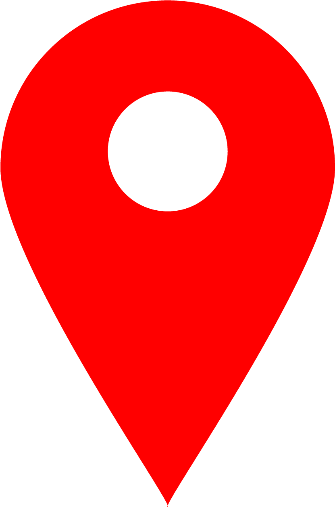
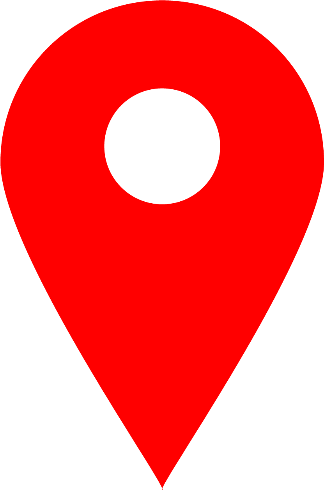

Памятник "Танк"
Памятник «Танк» установлен в память о вкладе магнитогорцев в Победу над фашизмом во Второй Мировой Войне, в знак того, что в военное время на Магнитогорском Металлургического комбинате отливали башни для танков ИС-2 и Т-34 (85), а так же производили бронелист и другую продукцию военного назначения. 14 июня 1945 года Магнитогорский горсовет своим протоколом зафиксировал идею создания и объявил конкурс на эскизный проект «Монумента Победы». Конкурсу отводилось всего 1,5 месяца, до августа 1945 года. Однако, данный срок оказался недостаточным и его продлевали несколько раз, в итоге конкурс был продлен до 1 января 1946 года. Строительство монумента так и не началось. В начале 1975 года решили воздвигнуть монумент на площади Победы. 8 мая на площади Победы состоялось открытие «Памятного знака» - бетонная глыба, формой своей напоминающая развернутое знамя, автором которого являлся М.М. Вараксин. По цоколю надпись «1945». В конце 1981 года его демонтировали и отвезли на свалку. Место развернутого знамени занял танк, открытие состоялось 28 января 1982 года. «Танк» был собран из советских танков Т-40 и ИС-3. На передней лицевой стороне оснований выбито: «В годы Великой Отечественной войны 1941-1945 из металла Магнитки изготовлен каждый 2 танк и каждый 3 снаряд». На противоположной стороне уложена чугунная плитка с отлитым на ней текстом: «Установлен в честь 50-летия металлургического комбината имени В.И.Ленина». Находится на левобережной площади Победы.
* Для просмотра на Персональном Компьютере (ПК) Или телефоне с помощью функции "Версия для ПК"